Journal Papers
-
Taminul Islam, Toqi Tahamid Sarker, Khaled R. Ahmed, and Naoufal Lakhssassi. "Detection and Classification of Cannabis Seeds Using RetinaNet and Faster R-CNN." In Seeds, 2024.
doi:10.3390/seeds3030031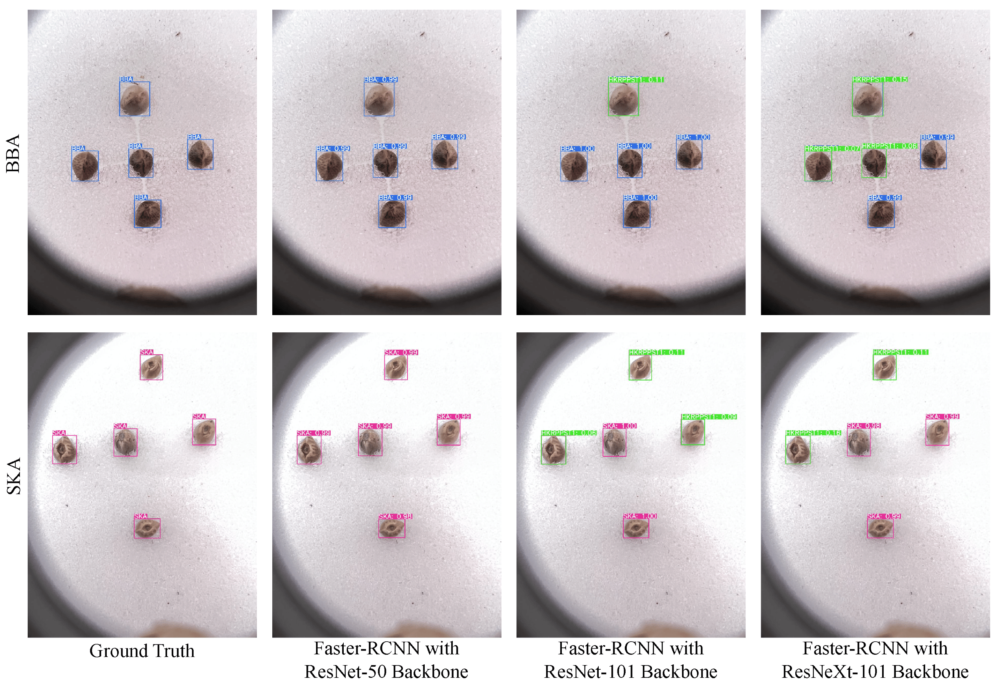
-
Taminul Islam, Md. Alif Sheakh, Mst. Sazia Tahosin, Most. Hasna Hena, Shopnil Akash, Yousef A. Bin Jardan, Gezahign FentahunWondmie, Hiba-Allah Nafidi, Mohammed Bourhia "Predictive modeling for breast cancer classification in the context of Bangladeshi patients by use of machine learning approach with explainable AI." In Scientific Reports (Nature), 2024.
doi:10.1038/s41598-024-57740-5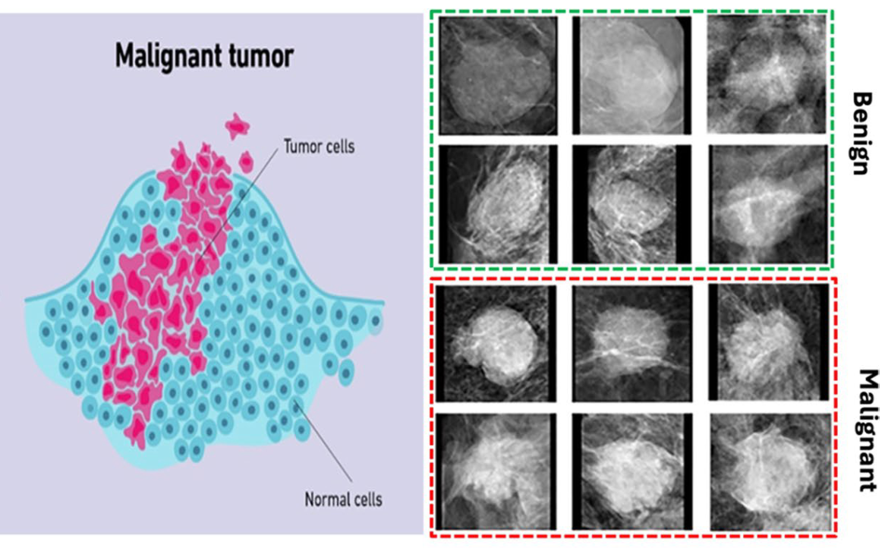
Taminul Islam, Md. Alif Sheakh, Anjuman Naher Jui, Omar Sharif, Md Zobaer Hasan., "A Review of Cyber Attacks on Sensors and Perception Systems in Autonomous Vehicle." In Journal of Economy and Technology, 2024.
doi:10.1016/j.ject.2024.01.002Taminul Islam, Md. Alif Sheakh, Md. Rezwane Sadik, Mst. Sazia Tahosin, Md. Musfiqur Rahman Foysal, Jannatul Ferdush, Mahbuba Begum., "Lexicon and Deep Learning-Based Approaches in Sentiment Analysis on Short Texts." In Journal of Computer and Communications, 2024.
doi:10.4236/jcc.2024.121002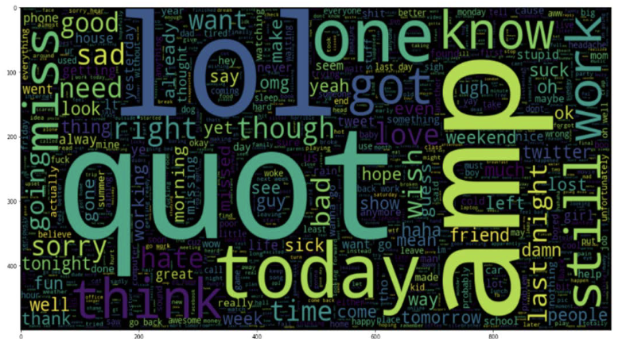
Mst Sazia Tahosin, Md Alif Sheakh, Taminul Islam, Rishalatun Jannat Lima, and Mahbuba Begum, "Optimizing brain tumor classification through feature selection and hyperparameter tuning in machine learning models." In Informatics in Medicine Unlocked, 2023.
doi:10.1016/j.imu.2023.101414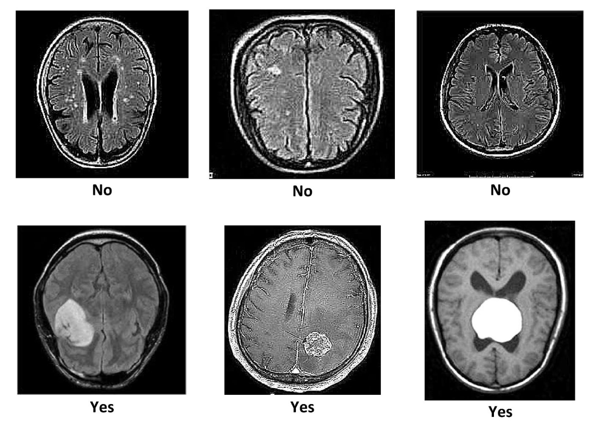
Md Simul Hasan Talukder, Rejwan Bin Sulaiman, Mohammad Raziuddin Chowdhury, Musarrat Saberin Nipun, and Taminul Islam, "PotatoPestNet: A CTInceptionV3-RS-based neural network for accurate identification of potato pests." In Smart Agricultural Technology, 2023.
doi:10.1016/j.atech.2023.100297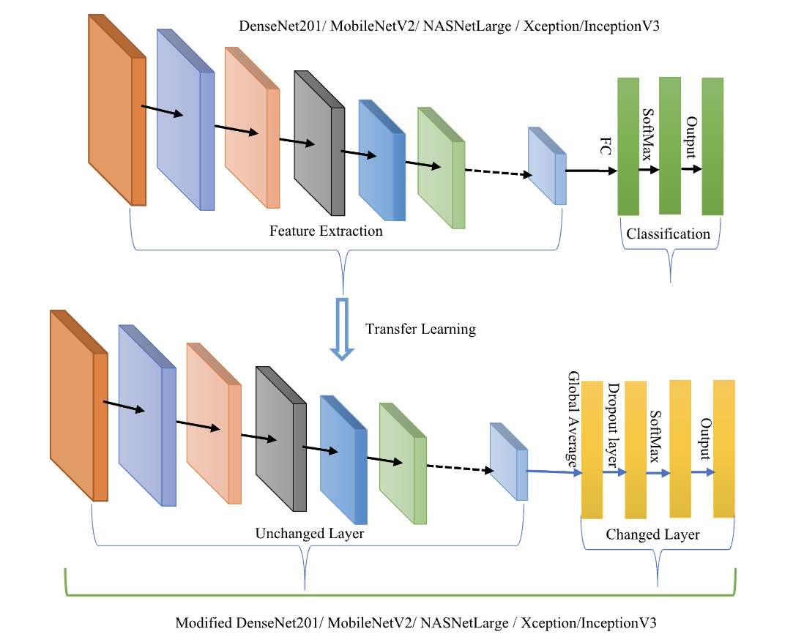
Conference Papers
-
-->
-
Taminul Islam, Toqi Tahamid Sarker, Khaled R Ahmed, Cristiana Bernardi Rankrape, Karla Gage., "WeedVision: Multi-Stage Growth and Classification of Weeds using DETR and RetinaNet for Precision Agriculture." In International Conference on Machine Learning and Applications (ICMLA), 2025.
doi:10.1109/ICMLA61862.2024.00214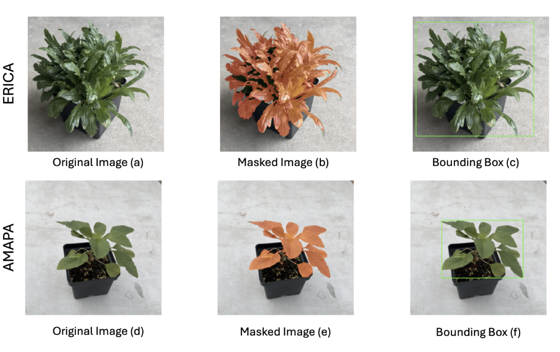
Toqi Tahamid Sarker, Taminul Islam, Khaled R Ahmed, "Cannabis Seed Variant Detection Using Faster R-CNN." In International Conference on Advanced Computing and Communication Systems (ICACCS), 2024.
doi:10.1109/ICACCS60874.2024.10716962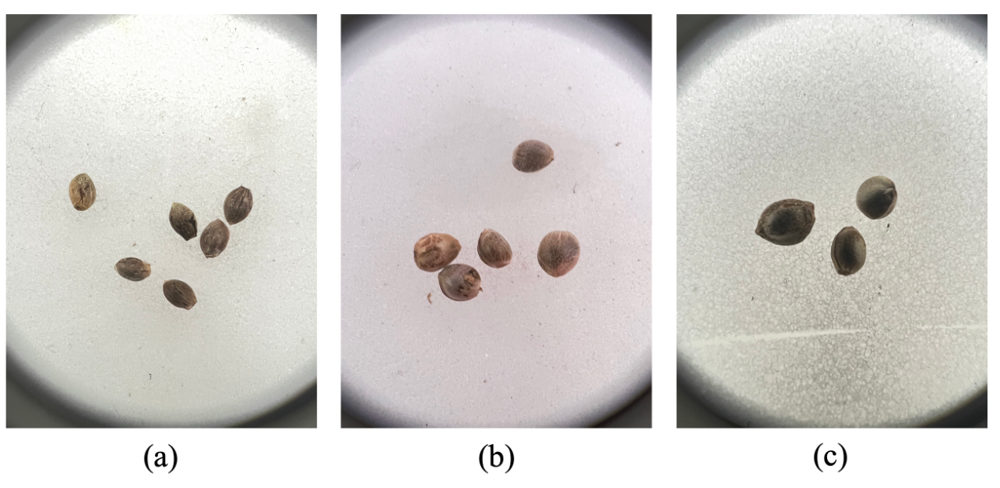
Utsha Roy, Mst Sazia Tahosin, Md. Mahedi Hasan, Taminul Islam, Fahim Imtiaz, Md Rezwane Sadik, Yassine Maleh, Rejwan Bin Sulaiman, Md Simul Hassan Talukder, "Enhancing Bangla Fake News Detection Using Bidirectional Gated Recurrent Units and Deep Learning Techniques." In NISS '24: Proceedings of the 7th International Conference on Networking, Intelligent Systems and Security., 2024.
doi:10.1145/3659677.3659703Md Alif Sheakh, Taminul Islam, Md Rezwane Sadik, Md Masum Rana., "Machine Learning Approach Analysis for Early-Stage Liver Disease Prediction in the Context of Bangladesh and India." In World Conference on Information Systems for Business Management., 2024.
doi:10.1007/978-981-99-8349-0_23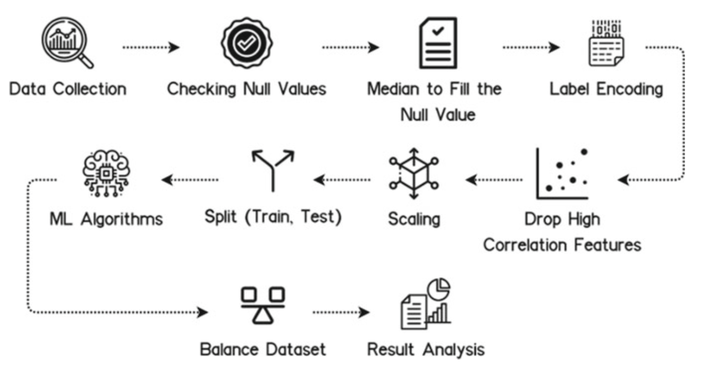
Taminul Islam, Md Rezwane Sadik, Md Fajle Rabbi Islam, Tanzina Rahman Mona, Tanjila Rahman, Md Musfiqur Rahman Foysal., "Early-Stage Diabetes Risk Prediction Using Supervised Machine Learning Algorithms." In International Conference on Futuristic Technologies (INCOFT)., 2024.
doi:10.1109/INCOFT60753.2023.10425305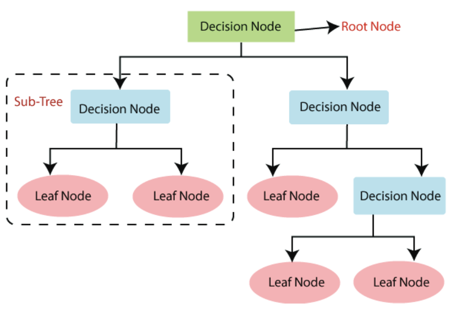
Taminul Islam, Ismail Hossain Pranto, Monjurul Islam, Md Tanvir Mahmud, Rahul Rudra, Md Musfiqur Rahman Foysal., "Disaster Related Tweets Analysis with Machine Learning Approaches." In International Conference on Futuristic Technologies (INCOFT)., 2024.
doi:10.1109/INCOFT60753.2023.10425631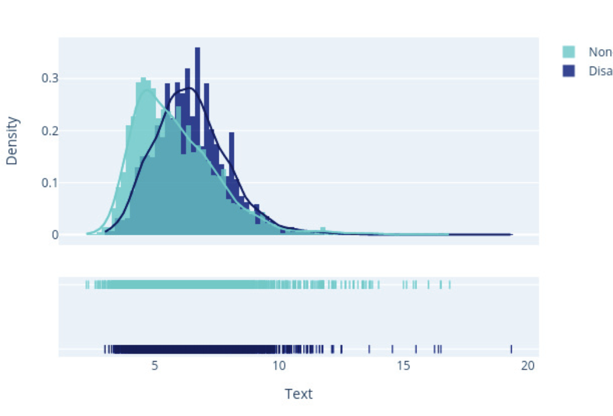
Simul Hasan Talukder, Sohag Kumar Mondal, Mohammad Aljaidi, Rejwan Bin Sulaiman, Taminul Islam., "Heart Disease Risk Assessment and Prediction: A Robust Ensemble Approach with Extra Tree Classifier." In 2nd International Engineering Conference on Electrical, Energy, and Artificial Intelligence (EICEEAI), 2023.
doi:10.1109/EICEEAI60672.2023.10590147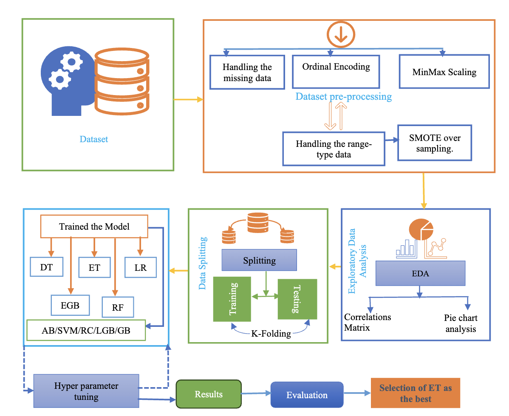
Taminul Islam, Adifa Vuyia, Mahadi Hasan, Md Masum Rana., "Cardiovascular Disease Prediction Using Machine Learning Approaches." In International Conference on Computational Intelligence and Sustainable Engineering Solutions (CISES), 2023.
doi:10.1109/CISES58720.2023.10183490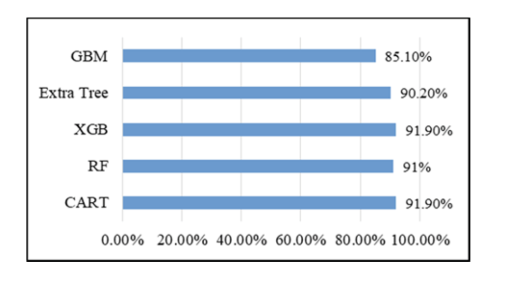
Md Alif Sheakh, Mst Sazia Tahosin, Md Maruf Hasan, Taminul Islam, Onamika Islam, Md Masum Rana., "Child and Maternal Mortality Risk Factor Analysis Using Machine Learning Approaches." In 11th International Symposium on Digital Forensics and Security (ISDFS), 2023.
doi:10.1109/CISES58720.2023.10183601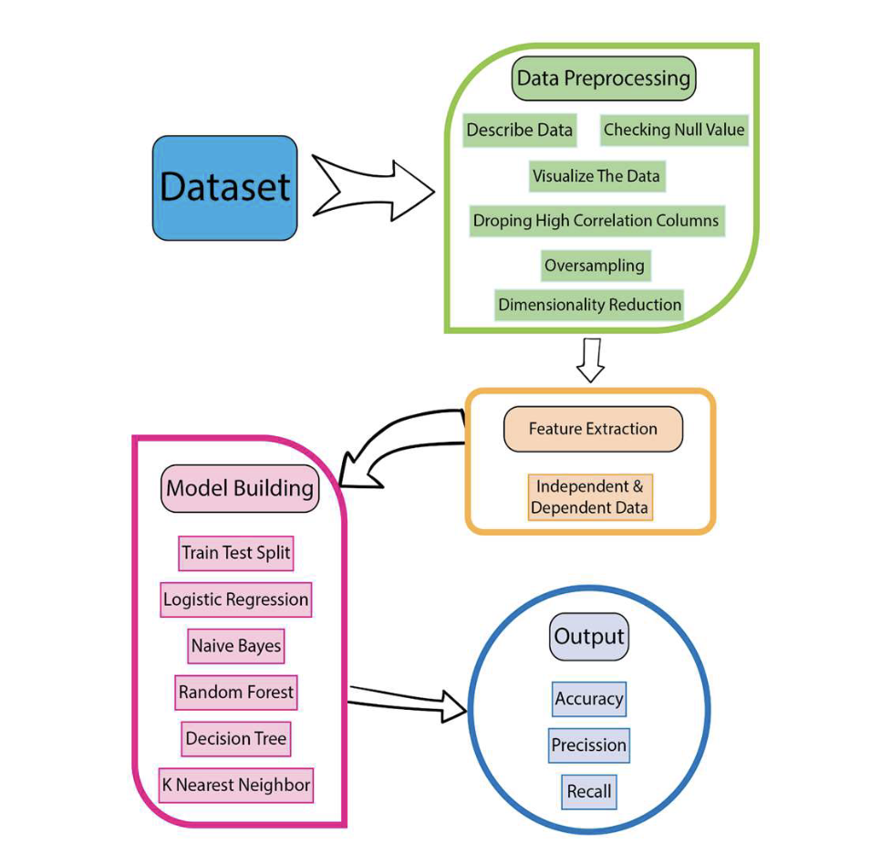
Taminul Islam, Arindom Kundu, Tanzim Ahmed, Nazmul Islam Khan., "Analysis of Arrhythmia Classification on ECG Dataset." In IEEE 7th International conference for Convergence in Technology (I2CT), 2022.
doi:10.1109/I2CT54291.2022.9825052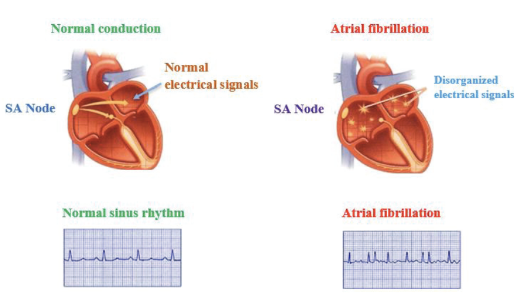
Md Towfiqul Islam, Tanzim Ahmed, ABM Raihanur Rashid, Taminul Islam, Md Sadekur Rahman, Md Tarek Habib., "Convolutional Neural Network Based Partial Face Detection." In IEEE 7th International conference for Convergence in Technology (I2CT), 2022.
doi:10.1109/I2CT54291.2022.9825259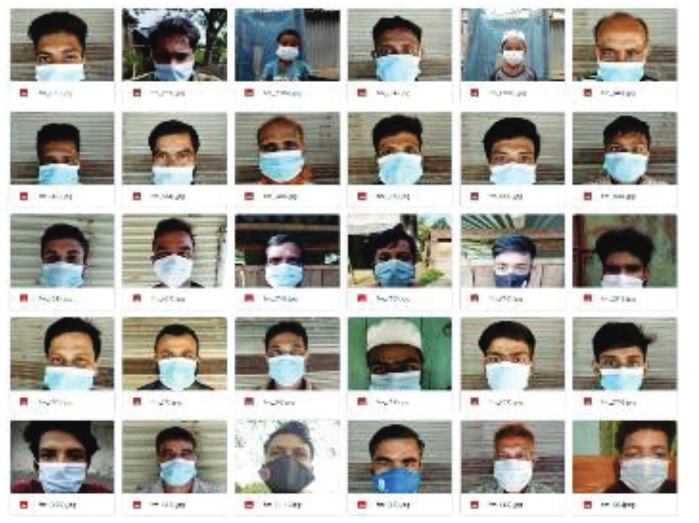
Taminul Islam, MD Alamin Hosen, Akhi Mony, MD Touhid Hasan, Israt Jahan, Arindom Kundu. "A Proposed Bi-LSTM Method to Fake News Detection." In International Conference for Advancement in Technology (ICONAT), 2022.
doi:10.1109/ICONAT53423.2022.9725937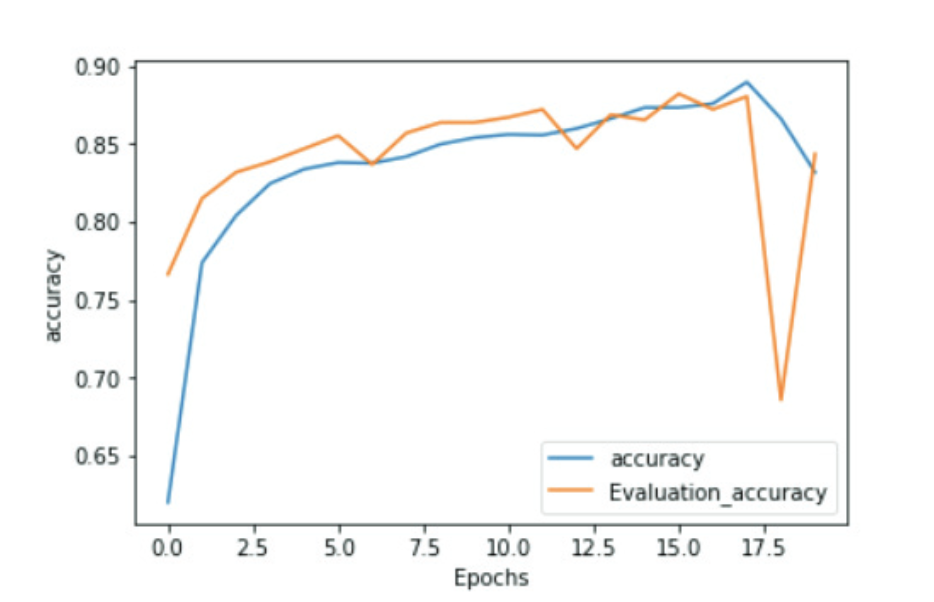
Taminul Islam, Arindom Kundu, Nazmul Islam Khan, Choyon Chandra Bonik, Flora Akter, Md Jihadul Islam., "Machine Learning Approaches to Predict Breast Cancer: Bangladesh Perspective." In International Conference on Ubiquitous Computing and Intelligent Information Systems, 2021.
doi:10.1007/978-981-19-2541-2_23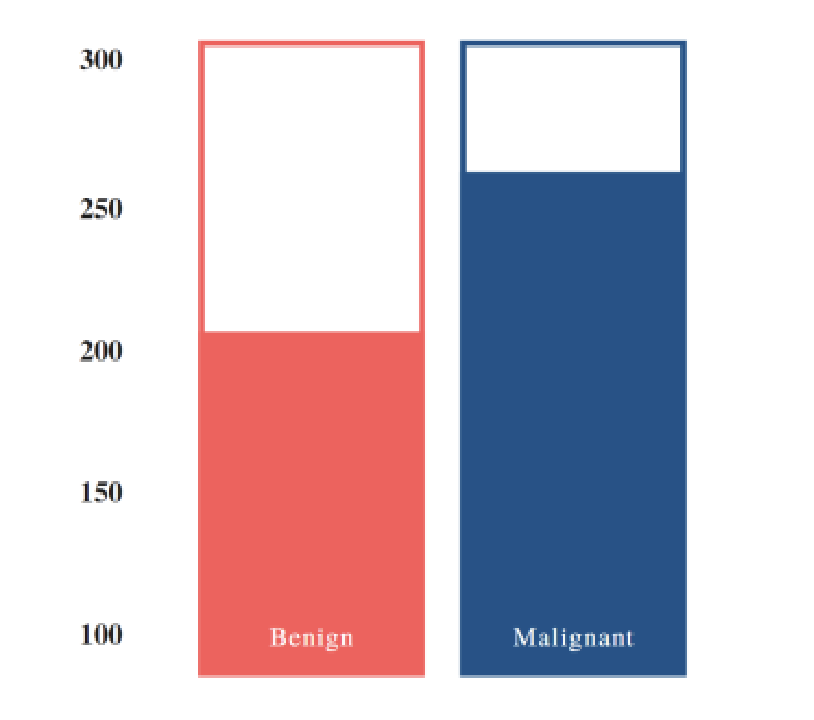
Book Chapters
-
Alif Sheakh, Tahosin Sazia, Taminul Islam, Rishalatun Jannat Lima. "Improving Hepatitis C Diagnosis Using Machine Learning Techniques." In Artificial Intelligence for Intelligent Systems, 2024.
doi:10.1201/9781003496410-15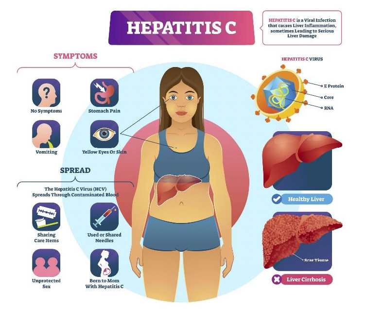
Taminul Islam, Arindom Kundu, Rishalatun Jannat Lima, Most Hasna Hena, Omar Sharif, Azizur Rahman, Md Zobaer Hasan. "Review Analysis of Ride-Sharing Applications Using Machine Learning Approaches: Bangladesh Perspective" In Computational Statistical Methodologies and Modeling for Artificial Intelligence, 2023.
doi:10.1201/9781003253051-7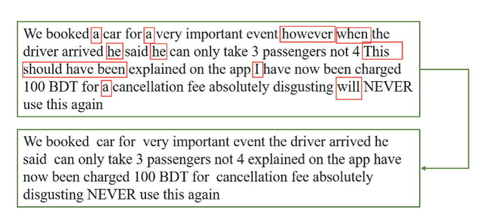
Poster
No matching items